Doença: Crestramento Bacteriano
Nome científico: Pseudomonas savastanoi pv. glycinea
Tipo: Bacteriana;
Sintomas: A doença pode ser encontrada nas hastes, pecíolos e vagens, mas principalmente nas folhas, nas quais se formam pequenas manchas translúcidas que com o tempo se juntam e decompõem os tecidos
Controle: Uso de sementes sadias, aração profunda para que não seja infectada com vestígios dessa doença da plantação anterior após sua colheita, rotação de culturas e uso de variedades resistentes.
Temperatura: 20 a 26º
Umidade relativa do ar: umidade elevada
Período de molhamento: orvalho abundante
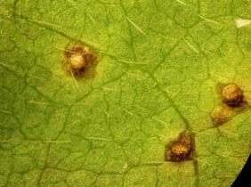
Doença: Pústula Bacteriana
Nome científico: Xanthomonas axonopodis pv. glycines
Tipo: Bacteriana;
Sintomas: se inicia com pequenas manchas pardas arredondadas que aumentam de tamanho de acordo com a evolução da doença, na parte inferior da folha pode ocorrer uma elevação esbranquiçada na mancha e não apresentam brilho dando aparência de áspera
Controle: Utilização de cultivares resistentes e bom preparo do solo para evitar infecção de culturas anteriores.
Temperatura: Acima de 28º
Umidade relativa do ar: Elevada
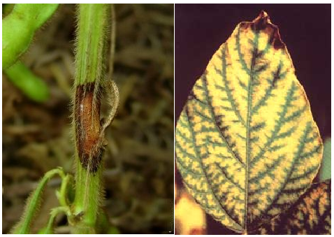
Cancro da haste
Nome científico: Diaporthe phaseolorum f. sp. meridionalis
Etiologia: Ocorre nos tecidos infectados antes da morte da planta. É infectada por conídios como por ascósporos na safra normal e na soja semeada é infectada pelos ascósporos..
Tipo: Fúngica
Sintomas: São pequenos pontos negros que mudam para manchas castanho-avermelhada, de formas alongadas e geralmente de um lado da haste. Essas lesões podem ser profundas e quando severas quebram da haste e do acamamento. A lavoura altamente infectada são totalmente dizimadas. Já a infecção das sementes são baixas. A primeira indicação de que a planta foi infectada, são a presença de folhas amarelas e com necrose nas nervuras.
Controle: Para o controle da doença, é pelo o uso de cultivares resistentes. Também podem ser usadas tratamento de sementes, rotação de culturas, semeaduras com maior espaçamento, adubação e calagem equilibradas.
Umidade relativa do ar: Alta umidade.
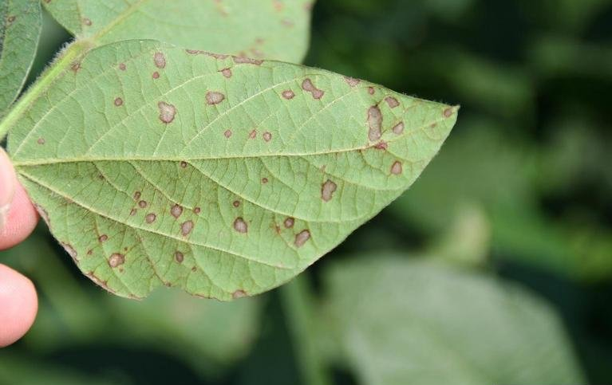
Mancha "Olho-de-Rã"
Nome científico: Cercospora sojina (sin. C. daizu)
Etiologia: A doença esporula na superfície inferior das folhas e produz grande quantidade de conídios hialianos. Apresenta certa facilidade em desenvolver variabilidade patogênica. É introduzido na lavoura através da semente infectada e dos poros levados pelo vento, e sobrevive os restos culturais
Tipo: Fúngica
Sintomas: Causa lesões nas folhas, hastes, vagens e sementes. São pequenos pontos ou manchas de encharcamento e mudam para castanho-clara no centro e bordos castanhos-avermelhada e cinza na parte inferior da folha. Nas hates e vagens, as lesões têm aspecto de encharcamento no começo e evoluem para manchas circulares de cor castanho-escuro, já na vagem, aparecem manchas elípticas ou alongadas com centro cinza e bordos
Controle: Uso de variedades resistentes com diversidade de genes de resistência. E também o tratamento de sementes com fungicidas benzimidazóis.
Temperatura: A doença é favorecida por condições em alta temperatura
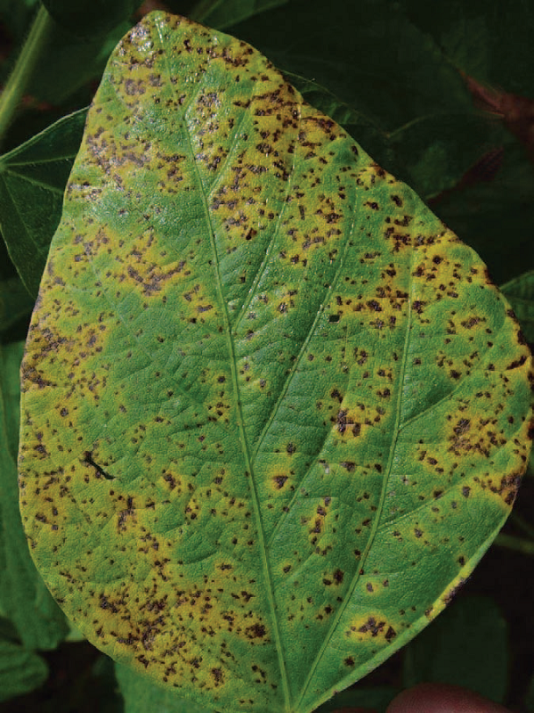
Mancha Parda ou Septoriose
Nome científico: Septoria glycines (Mycosphaerella uspenskajae)
Etiologia: Após a morte do tecido infectado o fungo produz picnídios no seu interior, com aberturas nas superfícies. Com bastante umidade, os conídios é expelida pelos poros, formando cirros que se acumulam na parte externa em forma de gotículas. A dispersão ocorre através da ação da chuva. O desenvolvimento e a infecção da doença são favoráveis em condições úmidas e quentes.
Tipo: Fúngica
Sintomas: Os primeiros sintomas são como pequenas pontuações ou manchas de contorno angulares, castanho-avermelhadas. Com situações favoráveis pode atingir os primeiros trifólios e causar severa desfolha. Nas folhas verdes, surgem pontos pardos e evoluem para manchas com halos amarelos e rosada na parte inferior da folha. Quando severas, causa desfolhação e maturação precoce
Controle: O controle mais eficiente pode ser obtido pela rotação de culturas, acompanhado da melhoria das condições físico-químicas dos solo, com ênfase na adubação de potássio. O controle é feito com aplicações de fungicidas na parte aéreo, com o mesmo fungicida utilizado para o controle do crestamento foliar de cercospora
Temperatura: Para desenvolver os sintomas nas temperaturas entre 15ºC a 30ºC, ótima em 25ºC
Período de molhamento: O fungo necessita de um período mínimo de 6 horas

Oídio
Nome científico: Erysiphe diffusa
Etiologia: É um fungo parasita biotrófico que se desenvolve em toda parte aérea da planta, e pode ocorrer em qualquer estádio de desenvolvimento da planta, é mais comum no início da floração. A identificação só é possível através das estruturas de frutificação da fase teleomórfica, os cleistotécios e seus apêndices. A disseminação ocorre pelo vento e as condições que favorecem a ocorrência da doença são temperaturas amenas.
Tipo: Fúngica
Sintomas: O fungo ataca toda a área da soja, porém, onde abserva-se estruturas brancas e pulverulentas. Os sintomas podem variar de clorose, ilhas verdes, manchas ferruginosas a cinza. Em infecções severas severas, causa crestamento foliar. Nas folhas, a coloração branca do fungo muda para castanho-acizentada.
Controle: O controle é através do uso de variedades resistentes. O controle químico pode ser utilizado por meio da aplicação de fungicidas. A adubação equilibrada reduz o impacto da doença
Temperatura: Favorecem a ocorrência da doença em temperaturas amenas entre 18-24ºC.
Umidade relativa do ar: Baixa umidade
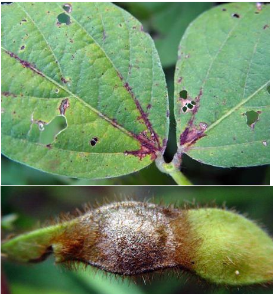
Antracnose
Nome científico: Colletotrichum truncatum
Agente etiológico (Patógeno): Colletotrichum truncatum; Colletotrichum dematium truncata; Colletotrichum truncatum.
Tipo: Fúngica
Sintomas: Necrose nos cotilédones da plântulas recém-emergidas;Manchas castanho-escuras a negras sobre as folhas, pecíolos, hastes e vagens; Folhas com manchas aquosas no início e evoluindo para manchas circulares ou elípticas negras; Vagens com manchas aquosas no início, aumentando de tamanho e tornando-se negras e deprimidas, podendo cobrir toda a vagem; Sementes com manchas castanho-escuras deprimidas.
Controle: Uso de sementes limpas e livres do patógeno, produzidas em áreas livres da doença, com baixo regime de chuvas e sob estrito monitoramento durante o período de cultivo.
Temperatura: Alta
Umidade relativa do ar: Alta
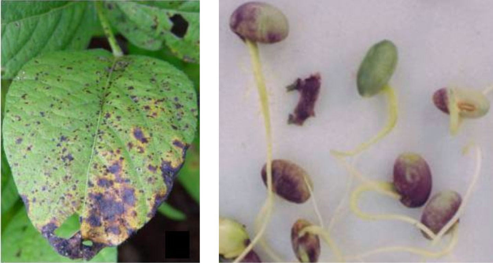
Crestamento foliar de cercospora e manchapúrpura da semente
Nome científico: Cercospora kikuchii
Etiologia: o fungo esporula sobre o tecido morto com grandes variações morfológicas e patogênicas e é introduzido na cultura através de sementes infectadas e vestígios de culturas anteriores.
Tipo: Fúngica
Sintomas: ocorre na parte aérea da planta, nas folhas surgem pontos castanho-avermelhadas que com o tempo aumentam em manchas escuras, as vagens apresentam pontos vermelhos que se tornam manchas castanho-avermelhadas, a vagem trasmitem o fungo para a semente e causa a mancha púrpura no tegumento
Controle: utilização de sementes sadias no plantio, manejo do solo para que não haja restos culturais infectados e aplicalçao de fungicidas principalmente os benzimidazóis
Temperatura: elevada
Umidade relativa do ar: elevada e formação de orvalho
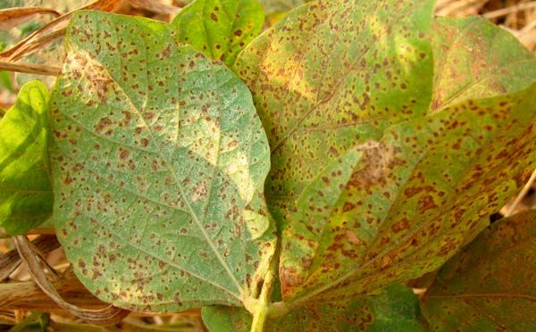
Ferrugem Asiática
Nome científico: Phakopsora pachyrhizi
Etiologia: esporos Phakopsora pachyrhizi: uredósporos e teliósporos com penetração direta pela cutícula
Tipo: Fúngica
Sintomas: inicialmente surgem minúsculos pontos escuros esverdiados em relação ao tecido sadio da folha e na parte inferior, há o aparecimento de protuberãncias de coloração castanha que abrem-se em poros e formam uredósporos que são carregados pelo vento
Controle: controle químico com uso de fungicidas principalmente do grupo dos triazóis, evitar semeadura na época em que a doença mais se desenvolve e fazer monitoramento da lavoura
Temperatura: de 15 a 28ºC
Umidade relativa do ar: dias nublados, chuviscos e alta umidade relativa do ar
Período de molhamento: mínimo 6 horas e um período máximo de 10-12 horas
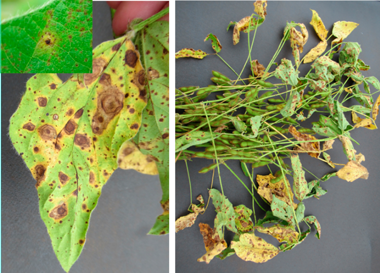
Mancha Alvo e Podridão Radicular de Corynespora
Nome científico: Corynespora cassiicola
Etiologia: os fungos resiste a culturas anteriores e também por sementes infectadas, propagam a infecção e desenvolvem pequenas lesões necróticas
Tipo: Fúngica
Sintomas: nas folhas inicialmente surgem pontuações castanho-avermelhadas que se fundem em manchas arredondadas de castanho-clara e a coloração podem se alternar, pode ocorrer também em pecíolos, hastes e vagens
Controle: utilização de cultivares resisitentes e de fungicidas, rotação de culturas e tratamento da semente
Temperatura: alta
Umidade relativa do ar: relativa/alta
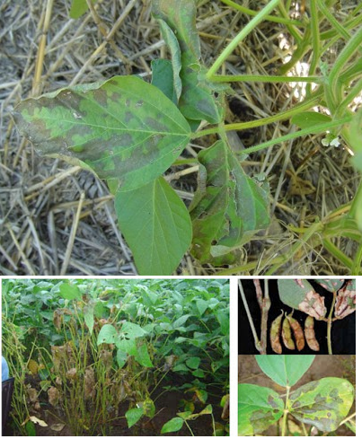
Mela
Nome científico: Thanatephorus cucumeris (Rhizoctonia solani AG1)
Etiologia: em condições favoráveis de temperatura e umidade, o fungo se desenvolve em restos de culturas e através de respingos de chuva
Tipo: Fúngica
Sintomas: surgem lesões de encharcamento nas folhas que evoluem em manchas de coloração marrom e a doença se propaga de uma planta para outra quando uma parte infectada cai sobre uma planta sadia
Controle: reduzir a quantidade de plantas para evitar a propagação, fazer rotação de culturas com semeadura direta, fazer adubação equilibrada, eliminação de plantas daninhas e utilização de fungicidas estrobilurinas
Temperatura: entre 25 a 30ºC
Umidade relativa do ar: longos períodos de umidade, acima de 80% e chuvas frequentes
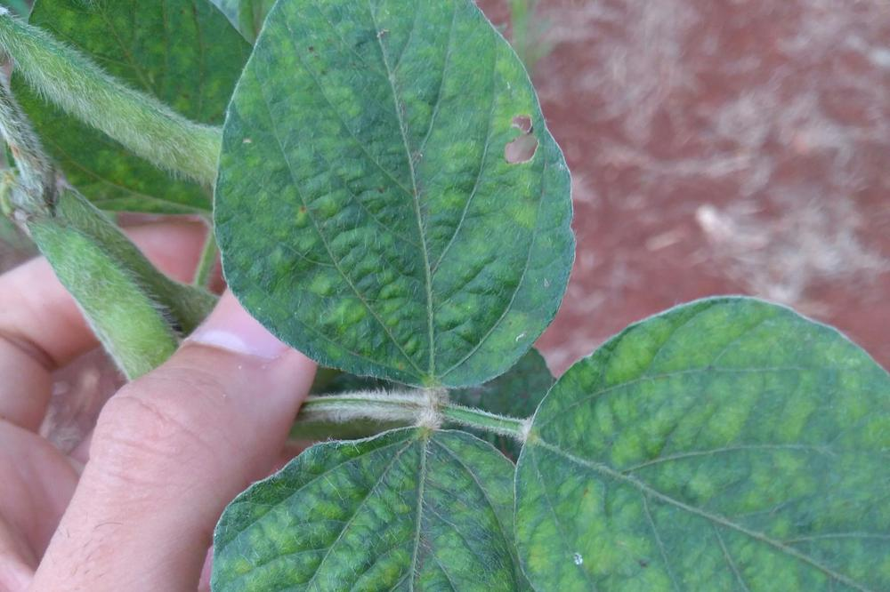
Mosaico Comum da Soja
Nome científico: Soybean mosaic virus (SMV).
Etiologia: o vírus se propaga por sementes e é transmitido através de picadas de pulgões a partir de plantas hospedeiras.
Tipo: virótica
Sintomas: Produzem sementes manchadas, apresentam trifolíolos encarquilhados, deformados, com algumas bolhas, e com áreas verde-claras e verde-escuras distribuídas irregularmente sobre o limbo foliar. Podem apresentar lesões escuras nas vagens, porte reduzido, menor produção e atraso na maturação, sendo comum encontrar plantas verdes no meio de plantas amadurecidas
Controle: Controle biológico ou químico dos pulgões. Entretanto, a maneira mais eficiente de se controlar a doença é através do uso de variedades resistentes a doença.
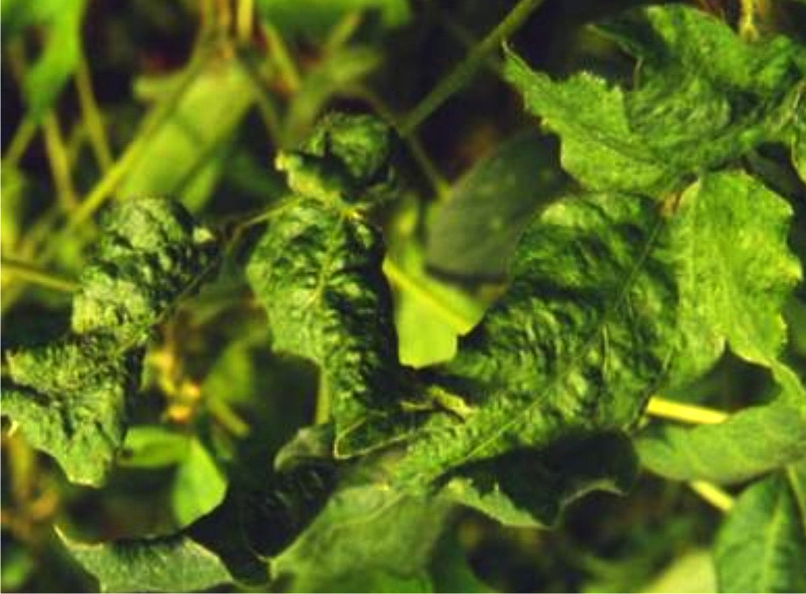
Mosaico Rugoso da Soja
Nome científico: Bean rugose mosaic virus (BRMV).
Etiologia: o mesmo vírus causador do mosaico rugoso da soja, é o do mosaico em desenho do feijoeiro e também é semelhante a ourtos vírus.
Tipo: virótica
Sintomas: Leve encarquilhamento das folhas, formação de bolhas verdes-escuras, circundadas por áreas verde-claras, levemente translucidas. Limbo foliar apresenta formação de bolhas e rugosidades. Formação de enações filiformes a partir da extremidade da nervura central da folha. Sementes manchadas
Controle: Controle biológico ou químico dos insetos. Utilização de variedades de sojas que são resistentes a doença

Mosqueado do feijão
Nome científico: Bean pod mottle virus.
Etiologia: o vírus é trasnmitido pelo besouro Cerotoma trifuncata e Epicauta vitata.
Tipo: virótica
Sintomas: pintas ou manchas em folhas jovens e menos intensas em folhas mais antigas e formação de bolhas
Controle: não há controles resistentes ao vírus.
Temperatura: amenas